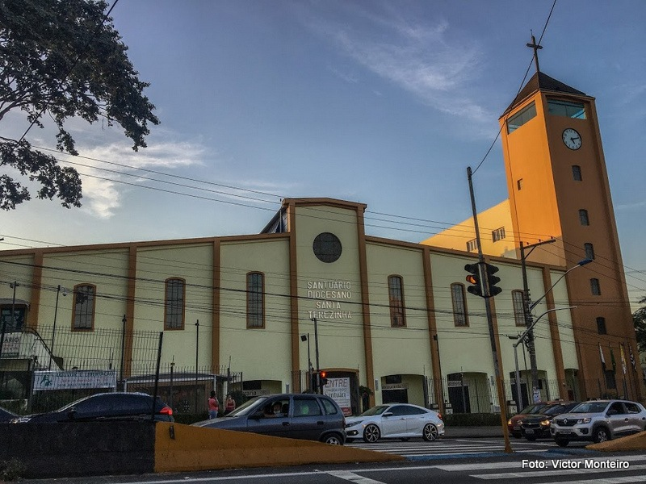

Fé que acolhe. Solidariedade que transforma.
Conheça nossa comunidade, nossas iniciativas e descubra como pequenos gestos podem fazer a diferença na vida de outras pessoas.
Conheça nossas ações
Um espaço de fé e acolhimento
O Santuário Santa Terezinha, localizado em Taboão da Serra, faz parte da história e da vida religiosa da comunidade.
Conheça nossa história →Compartilhar também é um ato de amor.
Conheça as formas de contribuir com as ações solidárias do Santuário. Sua participação pode fazer a diferença na comunidade.
Saiba como ajudar
Informação também é uma forma de cuidado.
A comunicação digital aproxima pessoas, facilita o acesso às informações e amplia a divulgação de iniciativas sociais.
Por isso, este site busca apresentar informações de forma clara, organizada e responsável, incentivando a participação da comunidade e a solidariedade.
Informação
Facilitar o acesso às informações sobre o Santuário.
Responsabilidade
Valorizar uma comunicação clara, respeitosa e consciente.
Solidariedade
Incentivar atitudes que contribuam com a comunidade.
Uma ajudinha para conhecer nosso Santuário!
Olá! Seja bem-vindo ao Santuário Santa Terezinha!